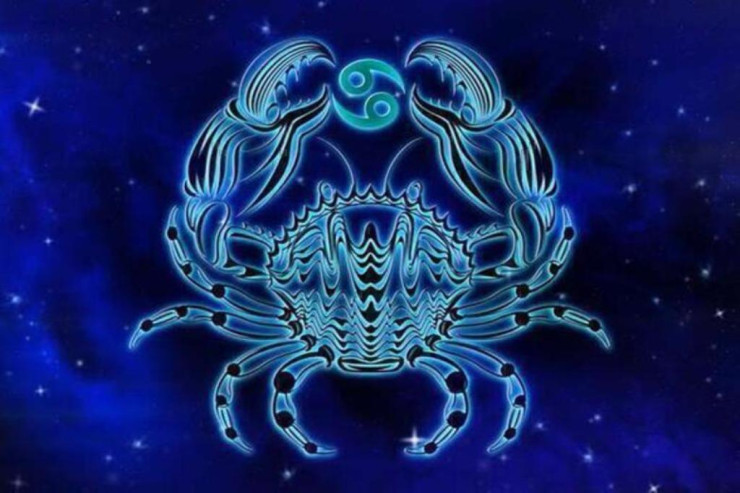

Məlumatlar
Xərçəng bürcü 22 iyun və 22 iyul tarixləri arasında doğanlar bu burc üzərindən olurlar. Xərçəng bürcü Ay tərəfindən idarə olunur, burada Yupiter ucalır, Saturn uzaqlaşır və Mars zəifləyir.
Xarakteri
- Özünə qapanıq
- Hissiyatlı
- Qaraqabaq
- Küsəyən
- Utancaq
Maraqlı Məlumatlar
Xərçəng öz ailəsinə və yaxın dostlanna çox qaygıkeşlıklə yanaşır. O, kiminlə dostlaşırsa, demək olar uzun müddət, bəlkə də hamişalik bu münasibati saxlayır Xərçanglər öz doğmalarının uğurlarına sevinirlər məğlubiyyətlərinə çox kədərlənirlər.